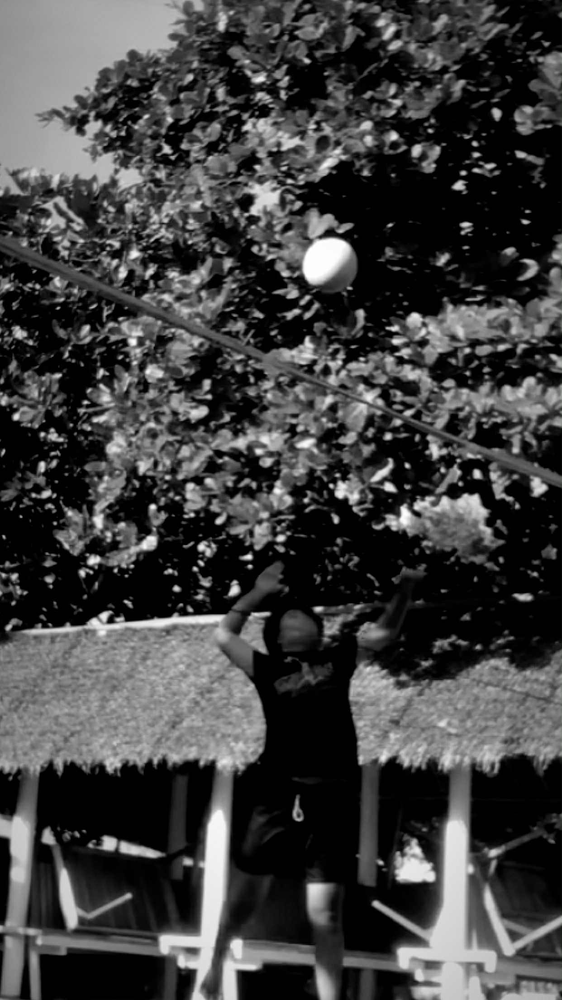

My name is Jasmine Boyle, I’m 18 years old, and I proudly come from Lutopan, Toledo City. I recently graduated from Don Andres Soriano National High School, and throughout my journey so far, I’ve learned a lot about who I am — my passions, my values, and what truly makes me happy. One of my greatest passions is playing volleyball. The energy, the teamwork, the challenge — it all pushes me to grow not only as a player but as a person. I’ve always loved challenges, especially the ones that test my patience, strength, and determination. I believe challenges shape us into stronger individuals. Another thing I enjoy is singing. It allows me to express myself and connect with others in a way words sometimes can’t. I’d describe myself as someone who lives by the values of kindness, respect, and love. No matter what life throws at me, I try to respond with a good heart. I believe treating others well is just as important as working hard for your goals. If there’s one thing I really dislike, though, it’s rainy days — especially when I’m all set to go to school. It can totally ruin my plans and my mood. I’d much rather choose a sunny day, even if it’s hot sometimes. With sunshine, I can do more of the things I enjoy, like playing volleyball or doing outdoor activities. The warmth and brightness of the sun just give me the motivation to move and make the most of the day As I move forward in life, I carry my passions, my values, and a hopeful heart. I know life will always have its ups and downs, but I’m ready for whatever comes next — as long as it’s not raining!
